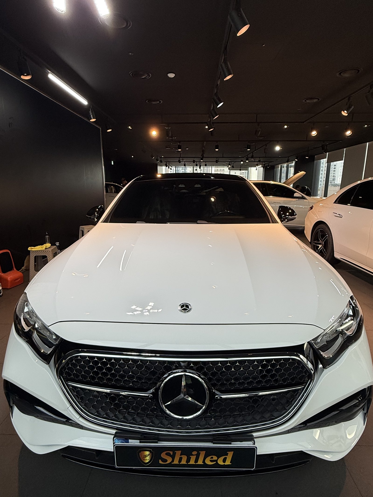
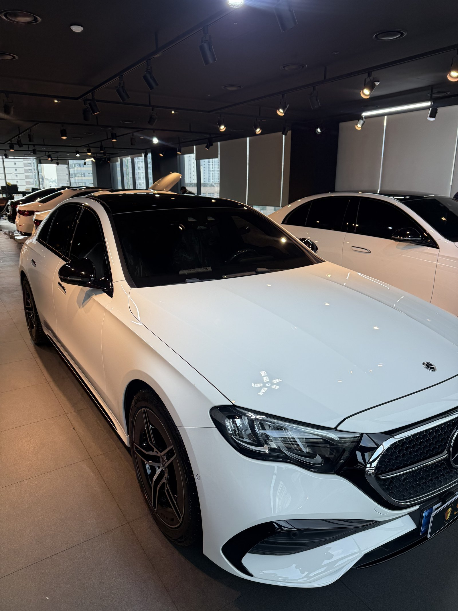
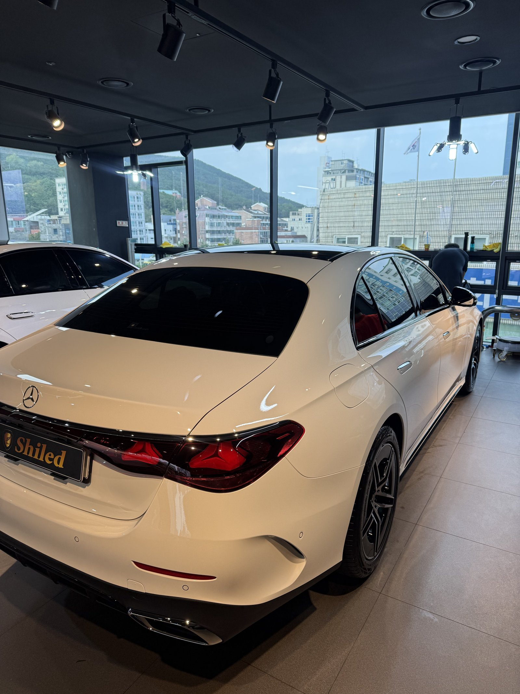
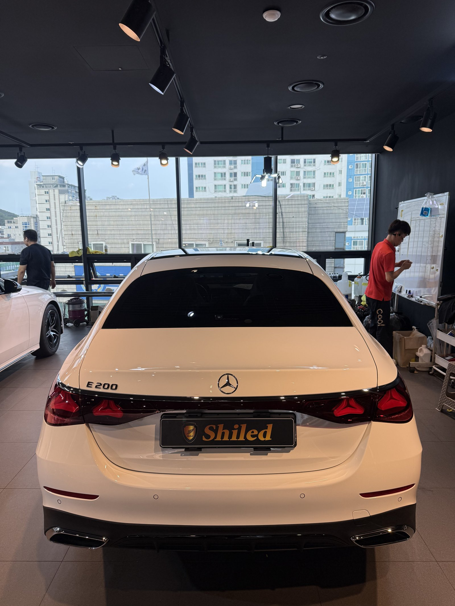
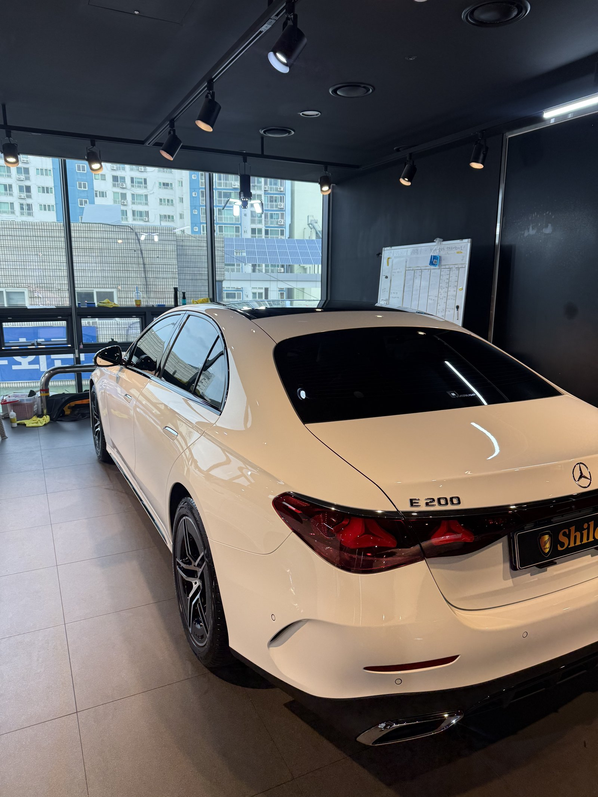
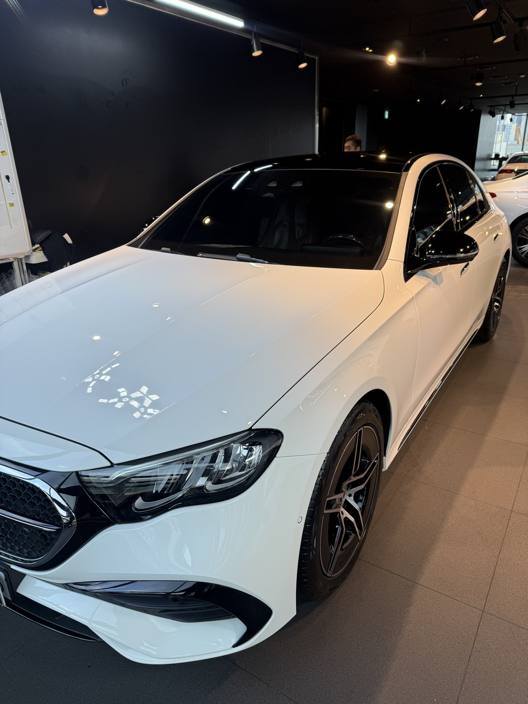
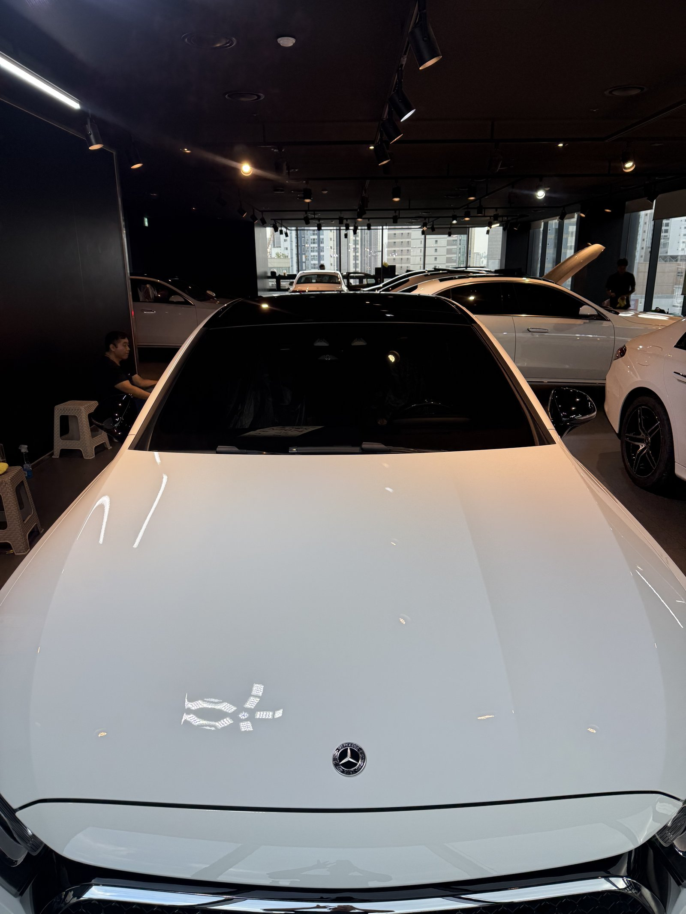
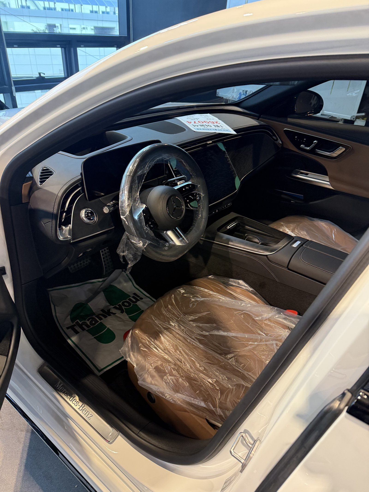
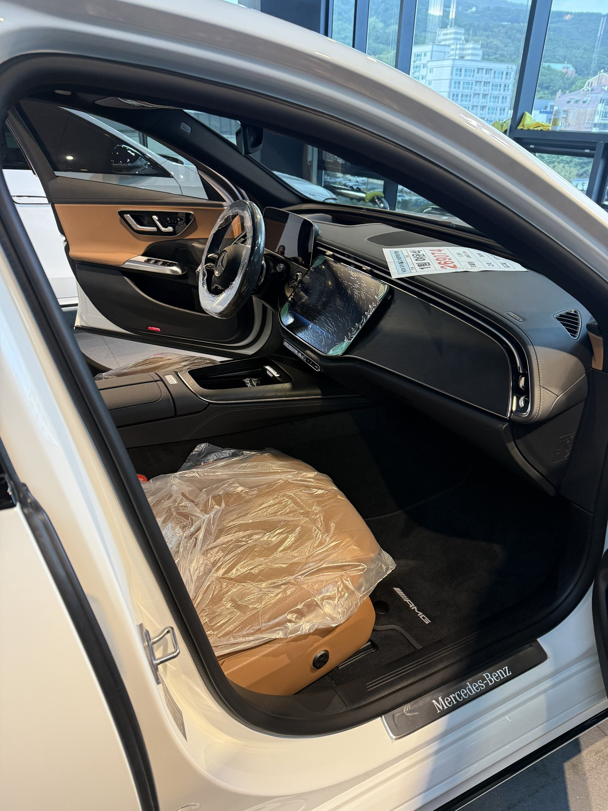
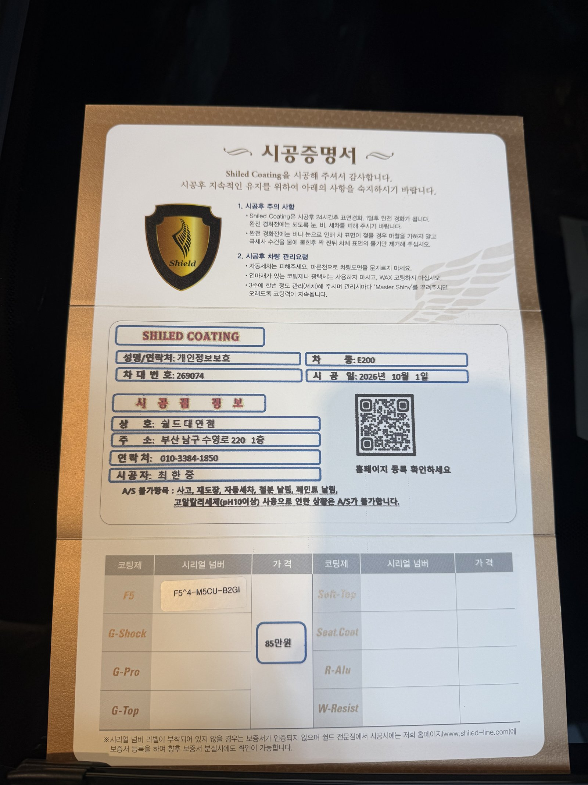

벤츠 E200 AMG라인, 백색입니다.
출고 전 새 차로 입고됐습니다.
이 차는 낮 시간, 창가 자연광이 들어오는 자리에서 마무리 사진을 남겼습니다.
부산 유리막코팅 신차 작업에서 자연광은 색이 실제로 어떻게 보이는지를 알려줍니다.

자연광 아래에서 흰 차는 어떻게 보이나요?
조명 아래 흰색과 햇빛 아래 흰색은 다르게 보입니다.
자연광에서는 펄의 결과 면의 굴곡이 더 부드럽게 드러납니다.
이 차도 트렁크와 후면 범퍼 쪽에서 흰색이 탁하지 않고 맑게 올라오는지 확인했습니다.
블랙 그릴과 블랙 휠이 들어간 AMG라인이라 경계선 정리도 함께 봤습니다.


E200 AMG 백색에 F5를 올린 이유
F5는 색감의 깊이와 글로시함에 특화된 코팅입니다.
흰색은 광이 올라올수록 깨끗해 보이는 색입니다.
이번 부산 유리막코팅 작업도 F5로 진행했습니다.
코팅제는 대표가 직접 개발·제조한 제품입니다.

기술자의 팁
흰 차는 세차 후 물기를 그대로 두면 물때가 점으로 남습니다. 세차 직후 드라잉 타월로 바로 닦아주시는 것만으로도 코팅 상태가 오래 유지됩니다.



실내는 출고 전 그대로 지킵니다
실내는 브라운 톤 가죽 시트에 보호 비닐이 씌워진 신차 상태 그대로입니다.
외부는 F5로 마무리하고, 인도까지 깨끗한 상태로 관리합니다.
남구 대연동 매장에서 작업하고, 인도 전에 대표가 직접 최종 상태를 확인합니다.


시공증명서를 함께 드립니다
모든 시공 차량에 시공증명서를 드립니다.
차종·시공일·코팅제 시리얼 번호가 적혀 있고, 홈페이지에 등록해 보증을 받으실 수 있습니다. 이 차는 F5로 기록돼 있습니다.

차종·시공일·코팅제 시리얼이 기재된 시공증명서
자주 묻는 질문
Q. 백색 E200 AMG에는 어떤 코팅이 맞나요?
A. 이 차는 F5로 진행했습니다. F5는 색감 깊이에 특화돼 흰색의 펄감과 블랙 트림과의 대비를 살려줍니다.
Q. 같은 날 같은 차종이 여러 대인데 작업 품질은 괜찮나요?
A. 차 한 대씩 전처리부터 마무리까지 순서대로 진행합니다. 대표가 직접 마무리 상태를 확인한 뒤 인도합니다.
Q. 왜 출고 전에 코팅하나요?
A. 도장면이 가장 깨끗할 때 올린 코팅이 가장 오래갑니다. 운행과 세차로 잔기스가 생기기 전에 입혀두는 것이 핵심입니다.
Q. 코팅 후 세차는 언제부터 하나요?
A. 코팅이 자리 잡을 시간이 필요하므로 시공 직후 강한 세차는 피하는 것이 좋습니다. 정확한 시점은 인도할 때 안내해 드립니다.
Q. 쉴드광택 위치와 예약은 어떻게 하나요?
A. 부산 남구 유엔로220 1F 쉴드광택입니다. 예약·상담은 010-3384-1850, 대표 최한중이 직접 상담하고 책임 시공합니다.
새 차일수록 시작점이 다릅니다. 가장 깨끗할 때 입혀두십시오.
제품을 직접 만드는 사람이 직접 시공합니다.
부산에서 신차 유리막코팅을 고민 중이시면 편하게 연락 주십시오.
어떤 차를 타냐보다 어떻게 타냐가 중요합니다~!
시공 중에는 전화를 받지 못할 때가 많습니다.
카카오톡으로 차종과 원하시는 시공을 남겨주시면 확인 후 답변드립니다.
쉴드광택 · 부산 남구 유엔로220 1F · 대표 최한중